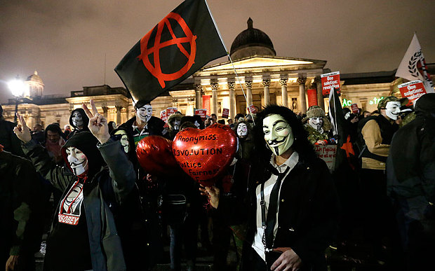

Introduction
On February 10, 2008, thousands of anonymous protesters took to the streets in 127 cities around the world to protest the Church of Scientology (Coleman, 2014). This was in response to a number of discussions via the social media website 4chan regarding reported cases of human rights abuses and censorship perpetrated by the Scientology organization following their efforts to legally halt dissemination of a leaked internal video on the Internet by numerous Anons (people who self-identify as members of Anonymous). Much like many of the previous actions of Anonymous, the events leading up to February 10th entailed their typical array of technologically-enabled trickery such as flooding Scientology phone lines with prank calls, ordering a strange array of goods and services for numerous Scientology locations, and directly attacking the organization’s cyber infrastructure through the use of distributed denial of service attacks (a DDoS is a type of offensive cyber attack usually performed on websites in which a number of artificial visitors keep anyone else from legitimately accessing the website; sometimes this results in website going offline). These events were also ignited through an avenue of cyber activism previously unused by Anonymous: video-based propaganda in which “war” was declared on the church of Scientology (better known as Project Chanology) (Coleman, 2014). For an ideological grouping of pseudo-anonymous actors that emerged from numerous fragmented, technologically-enabled spaces around the world, this declaration would lead to years of increasingly aggressive hacktivist moments and even stronger government reactions, ultimately resulting in further fragmentation within the spaces and places of Anonymous and other hacktivist groups.
Today, we live in an era where dependency on technology is accepted and expected in our everyday lives (Kitchin & Dodge, 2014). These are spaces that are increasingly mediated not only through the availability of technology such as smartphones and laptops, but in how we integrate these technologies into our social, political, and economic activities. We connect to family and friends through social media and are increasingly expected to stay connected to work through email and remote labor practices (Haythornthwaite, 2005; Strauss, 2017). Education at the primary, secondary, and university levels are instituting online educational platforms that permit people all around the world to engage with educators and materials; often never having to meet face-to-face in order to obtain these certificates and degrees (Rye, 2014). However, there is a persistence of voice that these activities permit that is both potentially empowering and potentially detrimental to actors based on their positions and perspectives within these cyborg spaces (Haraway, 1991). The digital mediation of individual and collective thought and empowerment, then voiced through several technological mediums, is of key concern for the purpose of our discussion here on hacktivism and cyborg struggle.
Here we will explore the spaces of digitally-mediated activism, or hacktivism, through the scope of anarchist geographic thought. We will examine how the radical political imaginaries and direct actions taken by online activists challenge traditional systems of control through the formation of ephemeral solidarities. First, we will extend the literature on anarchist spaces as presented by Springer (2016) to the processes and places of hacktivism. We will explore the concept of kaleidoscope spatialities by expanding upon how people engage in varying forms of collective resistance through non-hierarchical, relatively autonomous, technological means. The hacker collective Anonymous acts as a case study in understanding how solidarity is fomented in these fragmented spaces by opposing the violence and norms imposed by sovereign and capitalist forms of power through the technological structures and functions of the Internet and larger information and communication technologies (ICTs). Hacker culture is examined in order to situate the numerous relations and trajectories of individual actors to hacker communities, governments, and laws that define their actions and identities both inside digital geographies and in the places of everyday life. We conclude with a discussion on how the concept of kaleidoscope spatialities potentially enables nonviolent opposition and transformative praxes through new forms of socio-technical power relations.
 Source: telegraph.co.uk{kind=link}
Anarchist Spaces of Hacktivism
We live and struggle within multiple fragmented worlds, the byproduct of globalization in which the application of spatial fixes for space/time compression (Harvey, 1990) results in unevenness through the chaotic layering of spatial abstractions in the places of everyday life. As one layer of abstraction displaces another through cycles of contradictions and crises, material spatial practices must contend with the resultant fragmented structures of remnant spatial artifacts and the implications of their representations over time (Lefebvre, 1991). The role of technology in the late 20th and early 21st centuries has become critical in the creation of these regimes and the struggle within fragmented spaces against their effects; communication technologies and the Internet are exemplars of this paradigm.
As the telegraph gave way to the phone which then gave way to the cable, fiber, and wireless infrastructure of the modern Internet, each material space of technologically-enabled communications was built upon the other. The abstract space of the telegraph had to achieve the expected reality of its material operation. When limitations to those operations were found, one could choose to innovate upon the existing system to extend the current potentials (e.g., to hack the existing system) or conceive of a new abstract space in which material operations could be improved upon (e.g., invention of a new system such as the phone, replacing the telegraph’s dots and dashes with more efficient audio communications). However, the material infrastructure for the phone was built in and upon the image of its predecessor, leaving discarded material artifacts scattered within the foundational spaces of the new technology. As phone communications gave way to newer digital forms of abstract communications such as the fax and the protocols that would become the Internet, infrastructure had to be designed and built atop the old to realize the new and through these cycles, spaces became increasingly fragmented and complex with each iteration. However, its within these interstitial spaces that hackers thrive.
As legacy systems were replaced and captured within the new, the fragmented spaces that resulted from these moments of creative destruction (Harvey, 1990) produced multiple simultaneous trajectories of potential (Massey, 2005) through which various forms of action could be taken. The limitations which spurred leaps from one technological epoch to the next were accompanied by an imaginative geography that folded varying forms of distance into difference (Gregory, 2004). In each of the cases above, the difference and eventual technological innovation privileged a particular class-based imaginary of its potentials regardless of how the uneven fragmentation of existing spaces would affect the economic, political, and social realities of the Other. The concepts of systemic hacking, fragmentation, and Othering are critical in understanding the complex set of relations connecting hackers, technology, activism, and anarchism.
The radical imaginings and possibilities of Springer’s (2016) concept of kaleidoscope spatialities entails collective opposition to sovereign violence, predetermined norms, and categories of belonging. However, the struggle for an alternative system of anarchist relations oscillates (Rose, 1993) between the non-hierarchical spaces of autonomous technological power and hierarchical spaces of existing economic and political power. Both spaces have to struggle in the pursuit of alternatives within its respective rationale: existing spaces of power drive to sustain said power in the face of economic, political, and social crises, while new spaces struggle to promote and establish alternatives (Gibson-Graham, 2006), building atop the existing structures of power from which it seeks to liberate itself. It is in these spaces of drift (Ferrell, 2012, cited in Springer, 2016) that anarchist potentials may undo existing geopolitical paradigms in their technologically-enabled forms of collective action, resistance, and mutual aid (Springer, 2016).
There are several potentials in situating hacktivism within anarchist geographies. In exposing the connections between anarchism, organization, and technology, we open modern paradigms of socio-technical practices to the potential engagement with collective opposition to numerous problematics (Collister, 2014). Between 1987 and 2001, Serbians mobilized multiple forms of ICT in their opposition to their oppressive government during the era of Balkanization (Tunnard, 2003). In 1996, non-violent resistance to the political regime moved from printed mediums and radio transmissions to direct action via the Internet which eventually ended government control of the media. In 2011, the hacktivist collective Telecomix leveraged their collective technological knowledge to assist in the Arab Spring: helping maintain secure communications for protesters and activists to the outside world while overcoming political violence through facilitation of information critical to direct action for the protesters in their localized moments of upheaval (Dahlberg-Grundberg, 2016). For Telecomix, their identity was mutually constituted through their politics and their technology in spaces of collective resistance.
In these instances, the issue of moral ambiguity tied to social control, rights, and blurred boundaries are of great concern given the scale of their potential impact and the speed at which they may take effect (Thomas, 2005). As previously discussed, these are groups that mobilized technological power against existing regimes, but in doing so impose their own regime of power upon a space where deviancy and unethical conduct could just as easily manifest. Therefore, the radical imaginaries of kaleidoscope spatialities must be accompanied by anarchist political ethos situated in nonviolent opposition, dissent and action (Curran & Gibson, 2013). In conceptualization of the ethos related to these socio-technical intersections, in practice and in theory, Lefebvre’s “ensemble” of Deleuze’s “assemblage” may be useful in assessing the systemic totality of direct anarchist actions within existing and emergent infrastructures (Truscello & Gordon, 2013). As we will explore in the next section, the negotiated spaces of Anonymous exist as ephemeral, yet complex intersections of spatial trajectories that resulted in numerous global hacktivist moments akin to anarchist ideals, but have also resulted in splinter groups of divergent political ethos that are in many ways the antithesis of anarchist goals.
Source: nouvelordremondial.ccAnonymous
“We are Anonymous. We are Legion. We do not forgive. We do not forget. Expect us.”
Around the time of Project Chanology, this tagline became the mantra for a movement grounded in the culture of hackers, online activism, digital mischief (i.e., trolling), and forms of social obfuscation. The opportunity of freedom was afforded to anyone online, with access and knowledge of what the Internet was and how it could be used, to easily assume any identity they chose. This was best seen in the message boards of 4chan where the spaces of the message boards afforded anyone the chance to voice their opinions, but in a manner that was anonymous (Coleman, 2014). The intent was to let one’s content or contribution speak for itself in a manner that ultimately protected the identity of the contributor. However, even in the most loosely regulated of these message boards, the community of mostly anonymous contributors policed one another if content became too contentious or if the content was illegal. It was here that particular political ethos (Goode, 2015) and acts of policing (Ferrell, 2012) started to grow outward from their immediate digital geographies to the larger spaces of the Internet; hackers, digital activists, and those who would eventually become know as “Anons” saw themselves as maintainers of cyberspace (Nissenbaum, 2002) and the freedoms associated with it.
However, the popular media since 2008 has framed hacking and hackers in a very specific way that blurs the lines between criminality and activism (Klein, 2015). At the moment that a loosely aligned collective of individual online trolls took to the streets in an organized and strategic effort against an established organization in the eyes of existing economic and political powers, Anonymous used the fragmented nature of existing spaces to forward an anarchist space of cohesive politics and socio-technical power (Dunn & Jaeger, 2015), but one in which no one individual has an identity outside of the collective in the moment of hacktivism. This was and is a space in which labeling, organization, and practice over varying scales of direct action and insurrection establishes and expands circuits of hacktivist power, but this power must contend with the established regimes of power that they ultimately seek to disrupt (Logue & Clegg, 2015). To the media and many others who did not understand the intent of Anonymous or the means through which they forwarded their politics and activist agendas, this new anarchist space was seen as a threat akin to the threat of nuclear war (Murphy, 2011).
However, for members of these online spaces, their form of direct action was more than simple moments of trolling or cyber attacks; hacking is a craft to be honed and perfected (Steinmetz, 2015). For those who began their Anonymous identities and activities through 4chan and other online message boards, hacking moved from a form of entertainment (Turgeman-Goldschmidt, 2005) to a radical politics of conduct and ethics in digital spaces they saw as their own. Privacy then shifted from something that protected you from social retribution or potential trolling-based hacks to a practice that kept you from being arrested, thrown in jail, and separated from the technologies that had become a part of how you embodied a particular form of collective cyborg identity. The need to obscure identity accelerated the practices and production of Others through refining their perceptions online and in the places of everyday life (Steinmetz & Gerber, 2015). Many of the people involved in direct action on Scientology during Project Chanology used DDoS tools that were easy to install and use, but in a manner that made measuring of damages to other extremely difficult to assess (Mansfield-Devine, 2011). In the weeks and months that followed the street protests, several people were arrested and charged using a variety of legal constructs that punished people in a manner that exceeded the legal treatment of most drug- and violence-related crimes. From that moment on, the matters of anonymity and privacy became more than a fun way to post questionable content online, it became of matter of protecting life and livelihood for individuals engaged in collective action for the preservation of a space of perceived freedoms they themselves felt responsible for maintaining and securing from other forms of control and power.
Other forms of hacker culture emerged from these forays into hacktivism that leveraged the aspects of hacker craft with the spaces of civic engagement. Civic hacking (Schrock, 2016) leverages legitimate engagement with governments and economic institutions to promote and demonstrate the value of activism and advocacy using data and software. However, this is a culture that is ultimately mediated in two distinct ways. First, these spaces of innovation are ones in which existing powers structure, promote, and control particular forms of hacking that support several agendas: gaining insight into socio-technical assemblages that allow for eventual regulation of direct action and extraction of intellectual products. Secondly, this captures the ethos and craft of hackers/hacking and promotes a form of embodiment that is already mediated and controlled, mitigating any true challenge to existing hierarchies, patriarchies, and spaces of subjugation and counter-revolution.
Source: serpentsembrace.wordpress.comHacking the Capitalist State
The sequence of events that followed Project Chanology emboldened actors to pursue activist endeavors both within the suggested organizational facade and loose ethical framework of Anonymous as well as through splinter groups who ultimately pursued their own forms of disruption. It is the latter that truly began to raise concerns from state and capitalist actors as to the nature and threat these new forms of hacktivism. In 2007, Anonymous went after Hal Turner due to his overt and persistent hate speech and provocations through his radio show and website (Coleman, 2014). A mix of disruptive techniques were used to neutralize Turner’s ability to propagate his content, but despite the similarities of these actions to the protest against Scientology a year later, this did not draw the attention of authorities in the same way. With Turner, there was no object or scale of embodiment that authorities could go after; they were dealing with ghosts in the machine (Dunn & Jaeger, 2015). However, with the global response to street protests for Project Chanology, state authorities could connect the threat to a space of physical bodies that could be observed, controlled, and made examples of in what Mihr (2014) refers to as a “multi-stakeholder approach” to “cyber governance”. Since the US is being looked to as a leader in how cyberspace and the Internet should be policed (Fliegauf, 2016), the hacktivist techniques of Anonymous and the counter-surveillance (Kubitschko, 2015) of state and capitalist power should be global concerns.
These activist events and the incredibly strong response to them by authorities bring issues of state involvement and regulation to the forefront of this discussion. Issues related to digital piracy and intellectual property (Beyer & McKelvey, 2015) were early targets of legislation on utilization of the Internet and technology, but these debates ultimately proved how difficult it was, and is, to govern cyberspace (Slack, 2016). Many national and international organizations opt to apply existing criminal laws to online acts that rarely equate to severity of judgment the accused often receive (Slack, 2016). Intrusions and hacks by a number of unknown actors have recently forced regional cooperation between states of the ASEAN+3 to draft policies on cyber security (Thomas, 2009). At this time, it is often left up to the states and their national legal frameworks to decide what cyber crimes are and how they will be approached and handled (Crosston, 2012).
This has led to an era of digital mercenaries and government hackers who have grown in numbers with the increasing frequency of cyber attacks. Companies often hire hackers as cyber security specialists to examine security flaws and to provide insights as to how they can better secure their corporate computer infrastructure internally and online (Hausken, 2015; 2017). These “wargames” (Hausken, 2017) also assist the government and defense sectors in securing their systems and in the process, guide policy and legislation with specific language to stop certain types of public online activity. Forsyth and Pope (2014; 2015) state that hackers should work with the state in this manner as the Internet falls within the purview of national and international jurisdictions. However, this sets up a dangerous dichotomy of state and non-state actors (Rowland et al., 2014) that is misleading in terms of what one can and cannot do with Internet technologies, creating difference between the institutions of centralized state authorities and the bodies of individuals around the world who are left in precarious positions of socio-technical dis-empowerment.
With hackers playing on both sides of the law, benefiting economically and legally from their positions within any number of contracted labor arrangements, there raises the question as to what legal concerns exist for the grassroots hacktivist to engage in forms of non-violent insurrection and direct action. Anonymous, as the form of hacktivist collective that existed at the time of Project Chanology, began to fade away in the wake of more radical, divergent actions of splinter groups such as LulzSec (Coleman, 2014). This coincided with an array of legal concerns that began to emerge in relation to the legality of particular intersections of activism and utilization of computer technologies. Hackers in general have never had a very favorable view of the law, especially when situated in the spaces of the Internet and technology (Steinmetz & Gerber, 2014). Aside from the perceived condition of hackers as digital vigilantes (Kosseff, 2016) who are nothing more than criminals with keyboards, there were increasing concerns that ICT service and electronic product suppliers could be charged as accomplices in any number of cyber crimes (Martin & Newhall, 2016). With the often derogatory and misleading presentation of hackers in popular media and news outlets, the forms of deviancy and criminality of computer mediated actions (Williams, 2008) stoked fears in the public mind of an unseen threat from hacktivist groups such as Anonymous. However, government agencies were more than willing to exploit the tools and techniques hackers had developed (Sauter, 2013) in gathering international intelligence on perceived enemies and allies alike. Furthermore, the responsibility to observe and abide by state and international laws is placed directly on the individual in their virtual conduct online (Trammell & Bambauer, 2015). In this mode of state operation, the hacker and the hacked are potentially equally liable for damages while the state further restricts public activity (exploiting the fear of hackers) by instituting unreasonable security measures and deregulating corporate restrictions to access and manipulation of cyberspace for their mutual benefit.
When the hacker known as Sabu became an informant for the FBI, resulting in the arrest of key members of LulzSec (Coleman, 2014), it signaled the end of an era for Anonymous hacktivists. In 2007, Anonymous was a fairly innocuous group of online trolls going after racist, misogynistic radio personalities with fairly harmless techniques of direct action. However, Project Chanology increased the ranks of a new, politically active Anonymous with non-violent hacktivists focused on protecting the Internet as a free space and with radical “black hat” hackers who were there to use the organization and the Internet to create chaos and break laws. Within the increasingly fragmented socio-technical space of Anonymous, groups like Telecomix supported protesters in their struggles against violent regimes with technical expertise geared toward open transfers of knowledge for social action. Groups like LulzSec emerged from the atmosphere of hacktivist direct action in 2008, leading to years of attacks that seemed to have no real political motivations, hacking often because they simply could. In 2011, the attacks on WikiLeaks and its founder, Julian Assange, elicited the hacking of defense contractor HBGary and Operation Payback. Though both of these were highly technical in nature, Operation Payback hearkened back to the early days of DDoS attacks based on explicit rationale as to why Visa, PayPal, and Amazon were being targeted (e.g., pulling their payment services for donations to WikiLeaks). HBGary was a more clear cut case of “breaking-and-entering” to obtain emails pertaining to surveillance of Anonymous and other sympathetic groups to issues faced by Assange and WikiLeaks. Though the hack exposed plans for domestic surveillance of American citizens and other illegal acts, the manner in which the information was obtained by Anonymous became the primary focus of that direct action.
As Anonymous evolved over time, each major event attributed to them created more fragmentation in the spaces of hacktivism as new abstractions of the group were built upon the crumbled foundations of the old. As these fragmented digital spaces increased in both number and complexity, the resultant trajectories and intersections opened numerous potentials for direct action within the socio-technical dimension of kaleidoscope spatialities.
Source: news.softpedia.comAnonymous Discourses and Anarchist Potentials
Anonymous is what people make of it; this leaderless, collective space is perceived in as many ways as there are people engaged with its ideas and practices. Perhaps this is also the strongest conclusion that one can make about the potentials of anarchist geographies in the places of everyday life. Despite the observations of what hackers have done in the digital geographies of the Internet and cyberspace, there still remain several areas in need of further scrutiny. boyd and Crawford (2012) posed several questions related the duality of big data, advanced analytics, and research practices; every opportunity related to the introduction of technological advancements came with both potentials and consequences based on who was utilizing the data within a particular set of spaces for a specified number of purposes. For hacktivists, the consideration of their actions carries the same duality of consequence. In the course of examining the history and emergent conditions of Anonymous, there are several areas in which the anarchist approach to geography can assist in understanding and explaining the spaces of hackers and hacktivists. The first, and potentially foremost, problematic is that of freedom and authority.
As described above, hackers, activists, and trolls all see the Internet as a space of freedom. These free digital spaces not only facilitate the communications of individuals to one another, the also facilitate particular forms of organization and ideas through which the Internet and socio-technical assemblages (Kitchin & Dodge, 2014) become a dominant part in defining the places of everyday life. The most effective hacktivists of Anonymous (or hackers of any color hat within any number of Anonymous splinter groups) were those who were most dedicated to sustained focus on and engagement with the technologies they used in their forms of direct action (Coleman, 2014). Dedication to learning programming languages, tools, techniques, social engineering, and other skill sets is a not only how a hacker becomes a better hacker; this is part of the performativity (Springer, 2016) that establishes their identities and their situated positions within larger cultures of hacking and hacktivism.
From this, a hacker will be able to leverage their knowledge to engage with levels of insurrection and direct action (Springer, 2016) that are within their ability, but also within the spaces that condone certain types of individual and collective behaviors which often supersede the consideration of skill; this socio-technical enculturation reinforces hacker identity and the collective identity for a hacktivist group that is formed and reproduced as a result. The symptoms of these processes of enculturation are the spaces of appearance (Springer, 2016) that hackers use to validate their expression of freedom, skill, and community. 4Chan was one of the first locations online that allowed hackers and Anons to demonstrate their cleverness and skill through producing memes and derivative threads which were either lauded or rejected by the larger community. Social media websites such as Reddit and the message channels of AnonOps later served as locations where proof of hacks, technology vulnerabilities, and “lulz” could be affirmed by fellow members of that community.
However, in negotiating the positions of hackers in these fragmented spaces, there is a consideration of how outsiders viewed hackers, hacktivism, and Anonymous. 4Chan, Reddit, and several onion sites via the TOR VPN Browser are public spaces through which we can observe aspects of and form perspectives on particular forms of hacker cultures (Coleman, 2014). It is through these processes that the public sphere (Springer, 2016) of opinion, rhetoric, and judgment upon hackers is cast and decisions (in the form of laws and regulations) on what forms of freedom can be engaged in through the Internet and cyberspace. This is the manner in which Anonymous reproduced their anarchist spaces within the fragmentation of the systems embedded in their everyday lived experiences; reproduction that pitted their freedoms against systems of authority resulting in moments of insurrection and direct action.
The second problematic focuses on structures of control and dimensions of governance. Springer (2016), in the processes situating anarchist thought in geography, points out the historical consideration toward the distinction between governments and governance. Distinguishing the structures of power from the processes that produce the power proves to be quite important in understanding not only why Anonymous acts in the way it does, but explains why Anonymous exists at all. Anonymous is a collective in which there are no leaders or true structures that govern their operation; structures of any vertical nature would be the antithesis of their politics and would contradict what gives them the dominance in spaces of technological power. Their governance is achieved through non-obligatory consensus (Springer, 2016) on a general code of conduct. This means that no one Anon has to abide by this code, but it is required in order to achieve a condition of egalitarian, collective identity against states that are non-egalitarian (Springer, 2016) by design and performance. Accusations of deviance and criminality as defined by governments, corporations, and the media are the direct actions and moments of insurrection that emerge as a symptom of a violent system of power and control; deviance to Anonymous is an act of resistance against the accusers that made their actions necessary.
We have covered the potentials of anarchist geographies in exploring the fragmented spaces of hacktivism. Contextualizing the hacktivist collective Anonymous in the scope of anarchist direct action and insurrection permits a better understanding of why particular hacktivist moments attempted to foment challenges to paradigms of violence, normality, and belonging through regimes of non-hierarchical, non-violent reaction indicative of their general demand for freedom. To these ends, the major moments of Anonymous did make an impact in the everyday lives of people, an impact that is still felt today. In light of the events surrounding WikiLeaks, hackers and hacking have changed how academics teach international and communications studies (Karatzogianni & Robinson, 2014). The questions and awareness that Anonymous raised toward the governments and businesses have shifted fault in high-profile hacks from the hacker to the failure of those institutions to protect our data and information. Despite the current media silence on Anonymous messages and operations, the threat of non-violence that hacktivist collectives pose to long standing structures of power and their violent functionalities has given global society a small space to breath and reconsider how people are situated to technologies and systems of power through which they can enact their own forms of freedom.
References
boyd, D., Crawford, K. (2012). Critical questions for big data. Information, Communication and Society. 15(5), 662-679.
Beyer, J., McKelvey, F. (2015). You are not welcome among us: Pirates and the state. International Journal Of Communication, 9, 890-908.
Coleman, G. (2014). Hacker, hoaxer, whistleblower, spy: The many faces of anonymous. Brooklyn: Verso.
Collister, S. (2014). Abstract hacktivism as a model for postanarchist organizing. Ephemera: Theory & Politics In Organization, 14(4), 765.
Crosston, M. (2012). Virtual Patriots and a New American Cyber Strategy Changing the Zero-Sum Game. Strategic Studies Quarterly, 6(4), 100.
Curran, G., Gibson, M. (2013). WikiLeaks, Anarchism and Technologies of Dissent. Antipode, 45(2), 294.
Dahlberg-Grundberg, M. (2016). Technology as movement: On hybrid organizational types and the mutual constitution of movement identity and technological infrastructure in digital activism. Convergence: The Journal Of Research Into New Media Technologies, 22(5), 524.
Dunn Cavelty, M., Jaeger, M. (2015). (In)visible Ghosts in the Machine and the Powers that Bind: The Relational Securitization of Anonymous. International Political Sociology, 9(2), 176.
Ferrell, J. (2012). Anarchy, Geography and Drift. Antipode, 44(5), 1687.
Fliegauf, M. (2016). In Cyber (Governance) We Trust. Global Policy, 7(1), 79.
Forsyth, J. W., Pope, B. E. (2014). Structural causes and cyber effects: why international order is inevitable in cyberspace. Strategic Studies Quarterly, (4), 112.
Forsyth, J. W., Pope, B. E. (2015). Structural causes and cyber effects: a response to our critics. Strategic Studies Quarterly, (2), 99.
Gibson-Graham, J. K. (2006). The end of capitalism (as we knew it): a feminist critique of political economy (1st University of Minnesota Press ed., 2006). Minneapolis: University of Minnesota Press.
Goode, L. (2015). Anonymous and the political ethos of hacktivism. Popular Communication, 13(1), 74.
Gregory, D. (2004). The colonial present: Afghanistan, Palestine, and Iraq. Malden, MA: Blackwell Pub.
Haraway, D. J. (1991). Simians, cyborgs, and women: the reinvention of nature. New York: Routledge.
Harvey, D. (1990). The condition of postmodernity: an enquiry into the origins of cultural change. Oxford [England] ; Cambridge, Mass., USA: Blackwell.
Hausken, K. (2015). A strategic analysis of information sharing among cyber hackers. Journal Of Information Systems & Technology Management, (2), 245.
Hausken, K. (2017). Security Investment, Hacking, and Information Sharing between Firms and between Hackers. Games, 8(2), 1.
Haythornthwaite, C. (2005). Social networks and Internet connectivity effects. Information, Community & Society, 8(2), 125-147.
Karatzogianni, A., Robinson, A. (2014). Digital Prometheus: WikiLeaks, the state-network dichotomy, and the antinomies of academic reason. International Journal Of Communication, 2704.
Kitchin, R., & Dodge, M. (2014). Code/space: Software and everyday life. Cambridge, MA: The MIT Press. (Original work published in 2011)
Klein, A. (2015). Vigilante Media: Unveiling Anonymous and the Hacktivist Persona in the Global Press. Communication Monographs, 82(3), 379.
Kosseff, J. (2016). The hazards of cyber-vigilantism. Computer Law & Security Review: The International Journal Of Technology Law And Practice, 32, 642-649.
Kubitschko, S., (2015). The role of hackers in countering surveillance and promoting democracy. Media And Communication, (2), 77.
Lefebvre, H., & Nicholson-Smith, D. (2011). The production of space (Nachdr.). Malden, Mass.: Blackwell.
Logue, D. M., Clegg, S. R. (2015). Wikileaks and The News of the World. Journal Of Management Inquiry, 24(4), 394.
Mansfield-Devine, S. (2011). Anonymous: serious threat or mere annoyance?. Network Security, 4-10.
Martin, B., Newhall, J. (2016). Technology and the guilty mind: When do technology providers become criminal accomplices? Journal Of Criminal Law & Criminology, 105(1), 95-148.
Massey, D. B. (2005). For space. London ; Thousand Oaks, Calif: SAGE.
Mihr, A. (2014). Good cyber governance: the human rights and multi-stakeholder approach. Georgetown Journal Of International Affairs, (SI), 24.
Murphey, D. (2011). CyberAnarchism, Wikileaks and computer warfare: the unprecedented dangers associated with information technology today. The Journal Of Social, Political And Economic Studies, (4), 455.
Nissenbaum, H. (2002). Hackers and the Battle for Cyberspace. Dissent, 49(4), 50-57.
Rose, G. (2007). Feminism and geography: the limits of geographical knowledge (Repr). Cambridge: Polity Press.
Rowland, J., Rice, M., Shenoi, S. (2014). The anatomy of a cyber power. International Journal Of Critical Infrastructure Protection, 7, 3-11.
Rye, S. A. (2014). The educational space of global online higher education. Geoforum, 516-14.
Sauter, M. (2013). “LOIC Will Tear Us Apart”: The Impact of Tool Design and Media Portrayals in the Success of Activist DDOS Attacks. American Behavioral Scientist, 57(7), 983.
Schrock, A. R. (2016). Civic hacking as data activism and advocacy: A history from publicity to open government data. New Media & Society, 18(4), 581-599.
Slack, C. (2016). Wired yet Disconnected: The Governance of International Cyber Relations. Global Policy, 7(1), 69.
Springer, S. (2016). The anarchist roots of geography: toward spatial emancipation. Minneapolis: University of Minnesota Press.
Steinmetz, K., (2015). Craft(y)ness. British Journal Of Criminology, 55(1), 125.
Steinmetz, K., Gerber, J. (2014). “The Greatest Crime Syndicate since the Gambinos”: A Hacker Critique of Government, Law, and Law Enforcement. Deviant Behavior, 35(3), 243.
Steinmetz, K., Gerber, J. (2015). 'It doesn't have to be this way': hacker perspectives on privacy. Social Justice, (3), 29.
Strauss, K. (2017). Labour geography 1: Towards a geography of precarity?. Progress in Human Geography, 1-9.
Thomas, J. (2005). The moral ambiguity of social control in cyberspace: a retro-assessment of the 'golden age' of hacking. New Media & Society, 7(5), 599.
Thomas, N. (2009). Cyber Security in East Asia: Governing Anarchy. Asian Security, 5(1), 3.
Trammell, A. M., Bambauer, D. E. (2015). Personal jurisdiction and the "Interwebs". Cornell Law Review, 100(5), 1129.
Truscello, M., & Gordon, U. (2013). Whose streets? Anarchism, technology and the petromodern state. Anarchist Studies, (1), 9.
Tunnard, C. R. (2003). From State-Controlled Media to The 'Anarchy' of the Internet: The Changing Influence of Communications and Information in Serbia in the 1990s. Journal Of Southeast European & Black Sea Studies, 3(2), 97.
Turgeman-Goldschmidt, O. (2005). Hackers' Accounts: Hacking as a Social Entertainment. Social Science Computer Review, 23(1), 8.
Williams, K. (2008). Using Tittle's control balance theory to understand computer crime and deviance. International Review Of Law, Computers & Technology, 22(1/2), 145-155.
This work is licensed under a Creative Commons Attribution-NonCommercial-ShareAlike 4.0 International License.